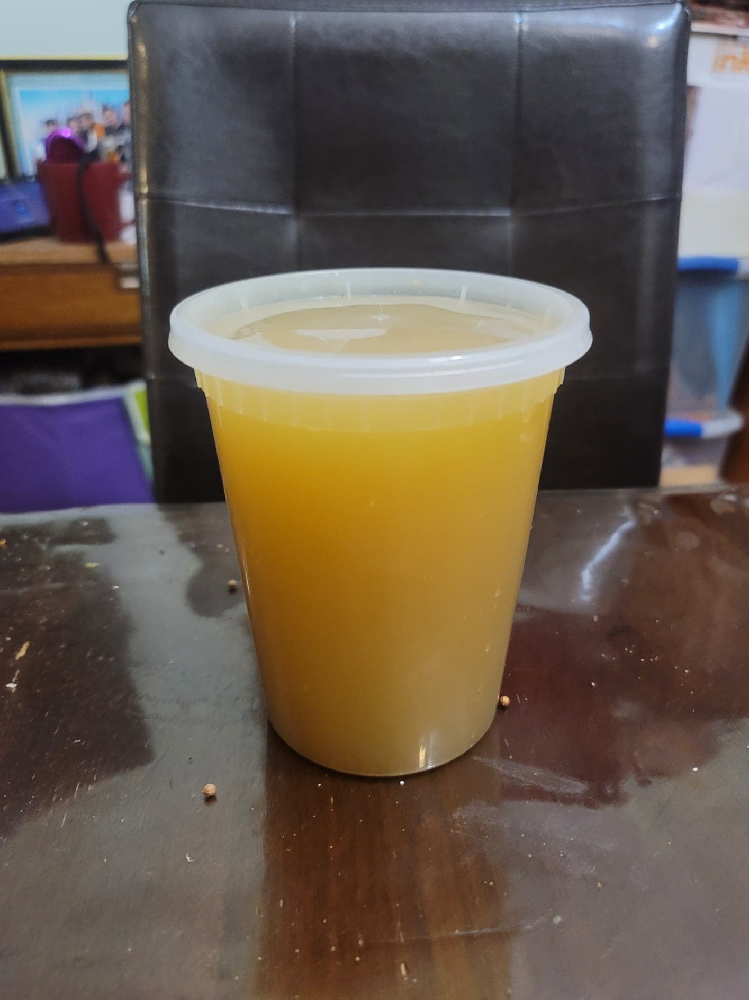

Shrimp Stock

Ingredients:
- Shrimp shells, from 2 lb Shrimp
- 1 tbsp Olive oil
- 1 Onion, rough chopped, peel included
- 2 Carrots, rough chopped
- 2 Celery sticks, rough chopped
- 3 cloves Garlic, rough chopped
- 2 tbsp Dried parsley, or 6 sprigs Fresh parsley
- 2 Bay leaves
- 1/2 tsp Coriander seeds
- 1/4 tsp Whole black pepper
- 6 cups Water
Instructions:
- Heat the oil in a large saucepan over medium heat. Add the shrimp shells, onion, carrots, celery, and garlic and sauté until the shells are pink and the vegetables have started to soften, about 10-15 minutes.
- Add the rest of the ingredients. Partially cover the pot and let come to a boil. Then reduce to a simmer and let cook for about 15 minutes.
- Remove from the heat and strain the stock into a container. Use immediately or let cool to room temperature before storing in the fridge.